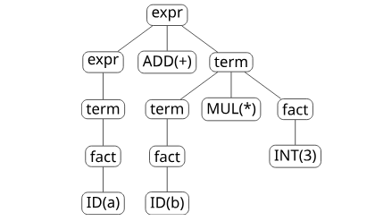
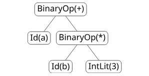
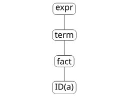
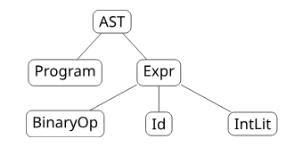
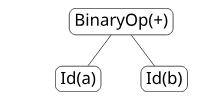
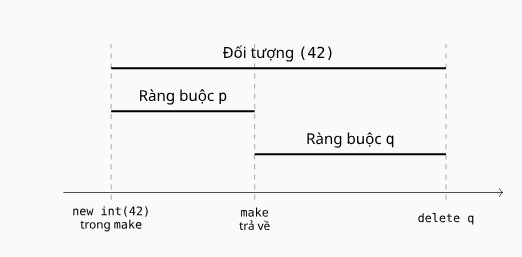
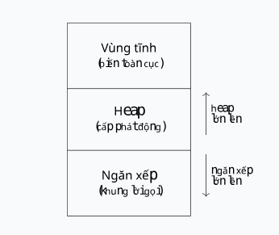
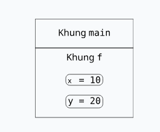
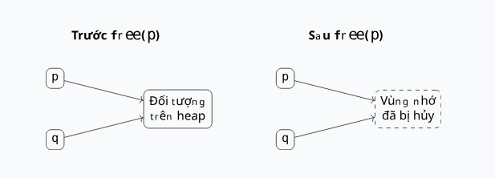
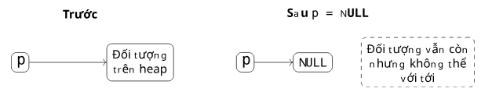

Mở đầu
Khi viết chương trình, ta liên tục sử dụng các tên gọi: x, sum, print, int, thậm chí cả các toán tử như +. Những tên này quen thuộc đến mức ta hiếm khi dừng lại để hỏi: khi chương trình nhắc đến một tên, làm sao ngôn ngữ biết được tên đó nghĩa là gì?
Ở các chương trước, ta đã thấy chương trình nguồn được phân tích từ vựng thành chuỗi token, phân tích cú pháp thành cây, rồi rút gọn thành cây cú pháp trừu tượng để kiểm tra ngữ nghĩa. Trong số những câu hỏi ngữ nghĩa đầu tiên mà mọi trình biên dịch và trình thông dịch phải trả lời, có một câu hỏi rất cơ bản: mỗi tên trong chương trình tương ứng với thực thể nào, ở đâu tên đó còn hiệu lực, và thực thể đó tồn tại trong bao lâu khi chương trình chạy.
Trong chương này, ta tiếp cận tên dưới góc độ nguyên lý, không gắn với một ngôn ngữ cụ thể nào. Ta sẽ thấy cùng một khái niệm về tên được hiện thực rất khác nhau trong C, Java, Python hay C++, và mỗi cách thiết kế lại phản ánh một đánh đổi giữa tính an toàn, hiệu năng và sự linh hoạt.
Mục tiêu của chương này là làm rõ tên là gì và tên đóng vai trò gì, ràng buộc gắn một tên với một thực thể như thế nào, ràng buộc được thiết lập vào thời điểm nào, một tên có hiệu lực ở những vùng nào của chương trình, và thực thể mà tên trỏ tới tồn tại trong bao lâu cùng với các lỗi bộ nhớ có thể phát sinh.
Tên và ràng buộc
Vì sao ngôn ngữ lập trình cần tên
Ở mức phần cứng, dữ liệu chỉ là các giá trị nằm tại những địa chỉ bộ nhớ cụ thể. Nếu phải làm việc trực tiếp với phần cứng, người lập trình sẽ phải nói những câu như "lưu giá trị 10 vào ô nhớ tại địa chỉ 0x7ffeefbff58c". Cách diễn đạt này vừa khó đọc, vừa khó kiểm tra, vừa phụ thuộc vào từng lần chạy.
Ngôn ngữ lập trình giải phóng người lập trình khỏi mức chi tiết đó bằng tên (name). Một tên là một chuỗi ký tự dùng để đại diện cho một thứ khác trong chương trình. Thay vì nói về địa chỉ bộ nhớ, ta chỉ cần viết:
int x = 10;
x = x + 1;và làm việc với cái tên x. Trình biên dịch hoặc trình thông dịch sẽ lo việc ánh xạ x xuống một vị trí lưu trữ thật.
Một điểm dễ bị bỏ qua là tên không chỉ dành cho biến. Trong một chương trình bất kỳ, tên xuất hiện ở rất nhiều vai trò: tên biến như count, tên hàm như main hay factorial, tên kiểu như int hay String, tên lớp như Student, tên module như math, và cả tên toán tử như +, *, &&. Tất cả đều là tên theo nghĩa rộng: một ký hiệu tượng trưng cho một thực thể nào đó trong chương trình.
Tên như một cơ chế trừu tượng hóa
Tên không chỉ là nhãn dán cho tiện. Tên là một phần của cơ chế trừu tượng hóa của ngôn ngữ: nó che giấu chi tiết hiện thực và cho phép người lập trình tập trung vào ý nghĩa.
Ví dụ, xét đoạn mã tính diện tích hình tròn:
int radius = 5;
double area = 3.14 * radius * radius;Cái tên radius che giấu một loạt chi tiết mức thấp mà người lập trình không cần quan tâm khi đang suy nghĩ về bài toán: giá trị được lưu ở đâu trong bộ nhớ, dùng bao nhiêu byte, được biểu diễn theo cách nào, và lệnh máy nào sẽ truy cập nó. Đối với người lập trình, radius chỉ đơn giản là "giá trị bán kính dùng để tính diện tích".
Sự tách bạch giữa hai góc nhìn này là điều cốt lõi. Người lập trình nhìn thấy một cái tên; còn trình biên dịch và môi trường thực thi nhìn thấy địa chỉ, kiểu, vùng lưu trữ và giá trị. Chính vì tên là một cơ chế trừu tượng, một ngôn ngữ phải định nghĩa rõ các quy tắc về việc giới thiệu tên, phân giải tên, và xác định khi nào một tên còn hợp lệ.
Ràng buộc là gì
Một ràng buộc (binding) là sự liên kết giữa hai thực thể. Trong ngôn ngữ lập trình, dạng ràng buộc phổ biến nhất là liên kết một tên với một thực thể mà nó đại diện.
Ví dụ, một khai báo đơn giản:
int x;tạo ra một ràng buộc giữa tên x và một biến kiểu int. Điều đáng chú ý là một khai báo tưởng chừng đơn giản lại thường thiết lập nhiều ràng buộc cùng lúc. Xét:
int x = 10;Ở đây có ít nhất bốn ràng buộc đan xen: tên x được ràng buộc với một biến; biến đó được ràng buộc với kiểu int; biến đó được ràng buộc với một vị trí lưu trữ trong bộ nhớ; và vị trí lưu trữ đó được ràng buộc với giá trị 10.
Có thể hình dung các ràng buộc này xếp thành nhiều tầng quanh một cái tên: từ tên đến kiểu, đến vị trí lưu trữ, đến giá trị hiện tại. Mỗi tầng trả lời một câu hỏi khác nhau, và các tầng này không nhất thiết được thiết lập vào cùng một thời điểm.

int x = 10: tên, kiểu, vị trí lưu trữ và giá trị.Một tên có thể được ràng buộc với những gì
Sinh viên mới học thường nghĩ ràng buộc chỉ là "tên biến gắn với biến". Thực ra phạm vi của ràng buộc rộng hơn nhiều. Một tên có thể được ràng buộc với bất kỳ loại thực thể có tên nào trong ngôn ngữ.
| Tên | Thực thể được ràng buộc |
|---|---|
x | biến |
PI | hằng số |
int | kiểu |
print | hàm |
Student | lớp |
+ | toán tử |
math | module |
length | trường hoặc phương thức |
Ví dụ, trong Python:
import math
x = math.sqrt(25)chỉ trong vài dòng đã có nhiều ràng buộc thuộc nhiều loại khác nhau: math được ràng buộc với một module, sqrt được ràng buộc với một hàm bên trong module đó, x được ràng buộc với một biến, và sau lời gọi, x được ràng buộc với giá trị 5.0.
Việc nhìn nhận ràng buộc một cách tổng quát như vậy rất quan trọng cho các chương sau. Khi ta nói về kiểm tra kiểu, điều phối phương thức hay phân giải tên trong trình biên dịch, tất cả đều là những trường hợp riêng của cùng một câu hỏi: tên này hiện đang được ràng buộc với thực thể nào?
Đa hình: một tên, nhiều ràng buộc khả dĩ
Trong những trường hợp đơn giản, mỗi tên ứng với đúng một thực thể. Nhưng nhiều ngôn ngữ cho phép một tên có thể tương ứng với nhiều thực thể khác nhau tùy ngữ cảnh. Hiện tượng này gọi là đa hình (polymorphism).
Một dạng đa hình quen thuộc là nạp chồng (overloading), khi cùng một tên hàm được định nghĩa nhiều lần với các kiểu tham số khác nhau. Ví dụ trong Java:
void print(int x) {
// ...
}
void print(String s) {
// ...
}Tên print lúc này gắn với nhiều hàm. Việc lời gọi nào được chọn phụ thuộc vào kiểu của đối số:
print(10); // gọi print(int)
print("Hello"); // gọi print(String)Đa hình làm tăng khả năng biểu đạt của ngôn ngữ: người lập trình dùng một tên trực giác duy nhất thay vì nghĩ ra printInt, printString riêng rẽ. Đổi lại, trình biên dịch hoặc môi trường thực thi phải gánh thêm trách nhiệm quyết định ràng buộc nào sẽ được dùng trong từng ngữ cảnh.
Bí danh: nhiều tên, một thực thể
Đa hình là một tên ứng với nhiều thực thể. Tình huống ngược lại cũng xảy ra: nhiều tên cùng trỏ tới một thực thể. Hiện tượng tạo bí danh (aliasing) xảy ra khi hai hay nhiều tên cùng tham chiếu tới một vị trí bộ nhớ hoặc một đối tượng.
Ví dụ trong C, sử dụng con trỏ:
int x = 10;
int *p = &x;
int *q = p;
*q = 20;Sau câu lệnh cuối: x == 20, vì p và q đều trỏ tới x. Việc ghi qua q thực chất là ghi vào chính ô nhớ mà x đại diện.

p và q cùng trỏ tới ô nhớ chứa giá trị của x.Bí danh làm chương trình linh hoạt hơn, chẳng hạn cho phép một hàm sửa trực tiếp dữ liệu của lời gọi mà không cần sao chép. Nhưng đánh đổi là chương trình trở nên khó suy luận hơn: khi nhìn vào một tên, ta không còn chắc rằng chỉ riêng câu lệnh dùng tên đó mới có thể thay đổi giá trị của nó.
Thời điểm ràng buộc
Khái niệm thời điểm ràng buộc
Ở Mục 1, ta đã thấy một khai báo như int x = 10 thiết lập nhiều ràng buộc. Một câu hỏi tự nhiên là: các ràng buộc đó được thiết lập khi nào? Câu trả lời không giống nhau cho mọi ràng buộc, và đây chính là một trong những ý tưởng quan trọng nhất của thiết kế ngôn ngữ.
Thời điểm ràng buộc (binding time) là thời điểm mà một ràng buộc được thiết lập. Để thấy rằng các ràng buộc khác nhau xảy ra vào những lúc khác nhau, hãy xét một câu lệnh rất quen thuộc:
x = x + 1;Đằng sau câu lệnh ngắn này có nhiều ràng buộc, mỗi cái được cố định vào một thời điểm khác nhau: toán tử + có ý nghĩa gì với số nguyên, x có kiểu gì, khai báo nào của x đang được dùng, x được lưu ở đâu, và giá trị hiện tại của x là bao nhiêu.
Các thời điểm ràng buộc tiêu biểu
Quá trình từ lúc một ngôn ngữ được thiết kế cho đến lúc một chương trình cụ thể chạy trải qua nhiều giai đoạn. Một ràng buộc có thể được thiết lập ở bất kỳ giai đoạn nào trong số đó:

Bảng dưới đây minh họa, với mỗi loại ràng buộc, thời điểm mà nó thường được cố định:
| Ràng buộc | Ví dụ | Thời điểm ràng buộc |
|---|---|---|
Ý nghĩa của + cho số nguyên | 1 + 2 | Thiết kế ngôn ngữ |
Kích thước của int | sizeof(int) | Hiện thực ngôn ngữ |
| Tên biến với khai báo | int x; | Biên dịch |
| Lời gọi hàm với thân hàm | f() | Biên dịch hoặc thực thi |
| Hàm ngoài với mã thư viện | printf() | Liên kết |
| Đối tượng chương trình với bộ nhớ | nạp file thực thi | Nạp |
| Đối tượng với vùng nhớ heap | new, malloc | Thực thi |
| Lời gọi phương thức với phương thức thật | điều phối động | Thực thi |
Ràng buộc sớm và ràng buộc muộn
Dựa trên thời điểm ràng buộc so với lúc chương trình chạy, ta phân biệt hai khuynh hướng. Ràng buộc sớm (early binding) là khi ràng buộc được thiết lập trước thời điểm thực thi, còn ràng buộc muộn (late binding) là khi ràng buộc được thiết lập trong lúc thực thi.
Một ví dụ điển hình của ràng buộc sớm:
int x = 10;
x = x + 1;Trình biên dịch thường có thể xác định ngay khi biên dịch rằng x nào đang được tham chiếu, x có kiểu gì, và phép toán số học nào được dùng. Mọi thứ đã rõ trước khi chương trình chạy.
Ngược lại, ràng buộc muộn trì hoãn quyết định đến lúc chạy. Ví dụ trong Java:
Animal a = new Dog();
a.speak();Phương thức nào thật sự được gọi bởi a.speak() có thể phụ thuộc vào đối tượng thực tế tại thời điểm chạy, chứ không chỉ vào kiểu khai báo Animal.
| Ràng buộc sớm | Ràng buộc muộn |
|---|---|
| Kiểm tra nhiều hơn lúc biên dịch | Linh hoạt hơn lúc chạy |
| Dễ tối ưu hóa | Hỗ trợ hành vi động |
| Thường nhanh hơn | Thường cần tra cứu lúc chạy |
| Ít linh hoạt hơn | Linh hoạt hơn |
Ràng buộc tĩnh và ràng buộc động
Hai thuật ngữ liên quan chặt chẽ là ràng buộc tĩnh (static binding) và ràng buộc động (dynamic binding). Ràng buộc tĩnh là ràng buộc được xác định trước khi chương trình thực thi; ràng buộc động là ràng buộc được xác định trong lúc thực thi.
Ví dụ ràng buộc tĩnh:
int x = 10;
printf("%d", x);Trình biên dịch xác định được khai báo nào của x đang được dùng, dựa trên cấu trúc của mã nguồn.
Ví dụ ràng buộc động:
class Animal {
void speak() { /* ... */ }
}
class Dog extends Animal {
void speak() { /* ... */ }
}
Animal a = new Dog();
a.speak();Phương thức speak() thật sự được chọn vào lúc chạy, dựa trên kiểu thực của đối tượng mà a đang trỏ tới. Đây chính là điều phối động (dynamic dispatch), một trong những dạng ràng buộc động quen thuộc nhất và là nền tảng của đa hình trong lập trình hướng đối tượng.
Vì sao thời điểm ràng buộc quan trọng
Thời điểm ràng buộc không phải là một chi tiết hàn lâm; nó ảnh hưởng trực tiếp đến nhiều khía cạnh quan trọng của ngôn ngữ và chương trình.
| Khía cạnh | Ảnh hưởng |
|---|---|
| Kiểm tra kiểu | Ràng buộc càng sớm → càng nhiều lỗi phát hiện trước khi chạy |
| Tối ưu hóa | Biết ràng buộc sớm → sinh mã hiệu quả hơn |
| Tính linh hoạt | Ràng buộc muộn → cho phép đa hình, reflection |
| Phân tích chương trình | Phân tích tĩnh dễ hơn khi ràng buộc biết trước |
| Chi phí lúc chạy | Ràng buộc muộn thường cần tra cứu hoặc điều phối lúc chạy |
Tựu trung, thời điểm ràng buộc là một sự đánh đổi giữa an toàn, hiệu năng và linh hoạt. Đây cũng là một sợi chỉ xuyên suốt nối chủ đề này với các phần sau của môn học: hệ thống kiểu, trình biên dịch, môi trường thực thi và phân tích chương trình đều phải đưa ra lựa chọn về việc ràng buộc cái gì sớm và cái gì muộn.
Tầm vực và môi trường tham chiếu
Từ ràng buộc đến tầm vực
Khi một tên đã được ràng buộc với một thực thể, ta vẫn còn một câu hỏi chưa được trả lời: ràng buộc đó có hiệu lực ở đâu trong chương trình? Một ràng buộc không nhất thiết áp dụng cho toàn bộ chương trình.
void f() {
int x = 10;
}
void g() {
x = 20; // Câu lệnh này có hợp lệ không?
}Câu trả lời phụ thuộc vào tầm vực (scope) của x. Tầm vực của một ràng buộc là vùng của chương trình nơi ràng buộc đó còn hiệu lực. Trong ví dụ trên, nếu x chỉ có tầm vực trong thân hàm f, thì việc dùng x bên trong g là không hợp lệ.
Khối
Cơ chế phổ biến nhất để tạo ra các vùng tầm vực cục bộ là khối (block). Một khối là một vùng văn bản của chương trình có thể chứa các khai báo.
{
int x = 10;
x = x + 1;
}
// Khai báo của x là cục bộ đối với khối này
x = 20; // lỗi: x không nhìn thấy được ở đâyMột điểm quan trọng cần nhấn mạnh là khối là một vùng văn bản, được xác định bởi cấu trúc viết của chương trình trong mã nguồn. Đặc điểm này là nền tảng cho tầm vực tĩnh, vốn dựa hoàn toàn vào cấu trúc văn bản chứ không dựa vào diễn tiến lúc chạy.
Tầm vực cục bộ và toàn cục
int g = 1; // biến toàn cục
void f() {
int x = 2; // biến cục bộ
x = x + g;
}Bên trong f, cả x lẫn g đều nhìn thấy được: x vì nó được khai báo cục bộ ngay trong f, còn g vì nó là biến toàn cục. Ngược lại, ở ngoài f, chỉ có g nhìn thấy được, còn x thì không.
Một khai báo cục bộ (local declaration) chỉ nhìn thấy được trong vùng cục bộ của nó, trong khi một khai báo toàn cục (global declaration) có thể nhìn thấy được ở nhiều vùng.
Tầm vực tĩnh
Tầm vực tĩnh (static scope), còn gọi là tầm vực từ vựng (lexical scope), nghĩa là một tham chiếu đến một tên được ràng buộc với một khai báo dựa trên cấu trúc văn bản của chương trình. Quy tắc cốt lõi là: một tên thường được ràng buộc với khai báo gần nhất bao quanh nó.
int x = 1;
void f() {
int x = 2;
printf("%d", x); // in ra: 2
}Trong printf, tên x được phân giải về khai báo cục bộ int x = 2;, vì đó là khai báo gần nhất bao quanh điểm sử dụng.
Quy tắc tầm vực tĩnh cho khối lồng nhau
Khi các khối lồng vào nhau, tầm vực tĩnh tuân theo một số quy tắc nhất quán:
| Quy tắc |
|---|
| Một tham chiếu đến một tên được ràng buộc với khai báo nhìn thấy được cục bộ nhất |
| Một khai báo không nhìn thấy được ở ngoài khối chứa nó |
| Các khai báo trong khối bao ngoài thì nhìn thấy được trong các khối nằm trong |
| Một khai báo ở khối bên trong có thể che một khai báo cùng tên ở khối bên ngoài |
int x = 1;
void f() {
int x = 2;
{
int y = x + 1; // x ở đây là x = 2
}
}Trong biểu thức x + 1, tên x được phân giải về khai báo int x = 2; cục bộ trong f, vì đó là khai báo gần nhất bao quanh khối trong cùng. Khai báo toàn cục int x = 1; bị che ở vị trí này.

hàm f int x=2 > khối trong int y=x+1">Che tên
Trường hợp một khai báo ở khối trong che một khai báo cùng tên ở khối ngoài được gọi riêng là che tên (name hiding).
int x = 1; // global x = 1
void f() {
int x = 2; // local x = 2
printf("%d", x); // in ra: 2
}Bên trong f, khai báo cục bộ x che khai báo toàn cục x. Vì vậy lời gọi printf dùng x cục bộ và in ra 2. Trong nhiều ngôn ngữ, che tên không phải là lỗi, nhưng nó có thể khiến chương trình khó đọc hơn.
Tầm vực động
Tầm vực tĩnh phân giải tên dựa trên cấu trúc văn bản. Một mô hình khác là tầm vực động (dynamic scope), trong đó một tham chiếu đến một tên được ràng buộc với khai báo đang hoạt động gần nhất trong chuỗi lời gọi tại thời điểm chạy.
var x = 1
function f() {
print(x)
}
function g() {
var x = 2
f()
}
g() // x trong f tham chiếu tới x trong g → in ra: 2Dưới tầm vực động, x trong f tham chiếu tới x trong g, bởi vì g là lời gọi đang hoạt động gần nhất có một khai báo của x. Nói cách khác, ý nghĩa của một tên có thể phụ thuộc vào việc hàm được gọi từ đâu.
Tầm vực động ngày nay không phổ biến trong các ngôn ngữ đa dụng, nhưng nó quan trọng cả về mặt lịch sử lẫn khái niệm.
So sánh tầm vực tĩnh và tầm vực động
Điều thú vị là cùng một chương trình có thể cho ra những ràng buộc tên khác nhau dưới hai mô hình tầm vực.
Với đoạn mã giả ở trên: dưới tầm vực tĩnh, x trong f được phân giải tại nơi f được định nghĩa → in ra 1. Dưới tầm vực động, x trong f được phân giải bằng chuỗi lời gọi; vì g đang gọi f và g có khai báo x = 2 → in ra 2.

| Tầm vực tĩnh | Tầm vực động |
|---|---|
| Dựa trên văn bản chương trình | Dựa trên chuỗi lời gọi lúc chạy |
| Dễ đọc và dễ phân tích | Phụ thuộc ngữ cảnh nhiều hơn |
| Phổ biến trong ngôn ngữ hiện đại | Ít phổ biến |
| Trình biên dịch phân giải được nhiều tên | Môi trường thực thi phải dò các lời gọi đang hoạt động |
Môi trường tham chiếu
Từ khái niệm tầm vực, ta đi đến một khái niệm gói gọn toàn bộ những gì nhìn thấy được tại một điểm. Môi trường tham chiếu (referencing environment) của một câu lệnh là tập hợp tất cả các tên nhìn thấy được đối với câu lệnh đó.
int a = 1;
void f() {
int b = 2;
{
int c = 3;
// điểm P — môi trường tham chiếu: a, f, b, c
}
}Tại điểm P, môi trường tham chiếu chứa: a, f, b, c — vì tất cả những tên này đều nhìn thấy được ở điểm đó.
| Mô hình tầm vực | Xây dựng môi trường tham chiếu như thế nào |
|---|---|
| Tầm vực tĩnh | Tên cục bộ + tên nhìn thấy được trong các phạm vi từ vựng bao ngoài |
| Tầm vực động | Tên cục bộ + tên nhìn thấy được trong các chương trình con đang hoạt động trên chuỗi lời gọi |
Thời gian sống, cấp phát và lỗi bộ nhớ
Tầm vực và thời gian sống
Tầm vực và thời gian sống có liên quan với nhau, nhưng đây là hai khái niệm khác nhau và rất dễ bị nhầm lẫn. Tầm vực trả lời câu hỏi ở đâu trong văn bản chương trình một tên có thể được dùng, còn thời gian sống (lifetime) trả lời câu hỏi trong khoảng nào của quá trình thực thi một đối tượng tồn tại.
void f() {
int x = 10;
}| Khái niệm | Ý nghĩa với x |
|---|---|
| Tầm vực | thân của hàm f (khái niệm về văn bản) |
| Thời gian sống | từ khi f được gọi đến khi f kết thúc (khái niệm về lúc chạy) |
Cách diễn đạt cô đọng: tầm vực là một khái niệm về văn bản, còn thời gian sống là một khái niệm về lúc chạy. Như ta sẽ thấy, có những trường hợp tầm vực và thời gian sống lệch nhau hẳn.
Thời gian sống của đối tượng
Trong ngữ cảnh này, từ đối tượng (object) được hiểu rộng hơn nghĩa trong lập trình hướng đối tượng. Ở đây, đối tượng là bất kỳ thực thể nào của chương trình có thể tồn tại trong lúc thực thi: một biến, một mảng, một bản ghi, một lần kích hoạt hàm, một giá trị cấp phát trên heap, hay một thể hiện của một lớp.
Thời gian sống của đối tượng (object lifetime) là khoảng thời gian giữa lúc đối tượng được tạo ra và lúc nó bị hủy.
void f() {
int x = 10;
// x được tạo khi f được gọi, bị hủy khi f kết thúc
}Đối tượng ứng với x được tạo ra khi f được gọi và bị hủy khi f kết thúc. Trong trường hợp đơn giản này, thời gian sống của đối tượng trùng khít với khoảng thời gian hàm chạy. Nhưng như mục sau cho thấy, sự trùng khít này không phải lúc nào cũng đúng.
Thời gian sống của ràng buộc
Không chỉ đối tượng mới có thời gian sống; bản thân ràng buộc cũng có. Thời gian sống của ràng buộc (binding lifetime) là khoảng thời gian trong đó một ràng buộc tồn tại.
Với biến cục bộ thông thường, thời gian sống của ràng buộc và thời gian sống của đối tượng thường trùng nhau. Tuy nhiên, khi có cấp phát trên heap, một đối tượng có thể sống lâu hơn chính ràng buộc đã tạo ra nó:
int* make() {
int* p = new int(42);
return p; // ràng buộc p kết thúc
}
int* q = make();
// đối tượng (giá trị 42) vẫn còn sống, giờ truy cập qua q
delete q; // đối tượng kết thúc tại đâyĐối tượng new int(42) được tạo trong make và chỉ thật sự bị hủy tại delete q. Ràng buộc p kết thúc ngay khi make trả về, trong khi ràng buộc q mới bắt đầu sau đó. Thời gian sống của đối tượng trải dài qua cả hai ràng buộc.

p và q nối tiếp nhau.Cấp phát đối tượng
Cách một đối tượng được cấp phát (allocation) quyết định phần lớn thời gian sống của nó. Có bốn nhóm cấp phát thường gặp:
| Loại cấp phát | Ví dụ | Thời gian sống tiêu biểu |
|---|---|---|
| Cấp phát tĩnh | biến toàn cục | toàn bộ quá trình thực thi |
| Cấp phát động trên ngăn xếp | biến cục bộ | trong suốt lời gọi hàm |
| Cấp phát động trên heap tường minh | malloc, new | đến khi được giải phóng tường minh |
| Cấp phát động trên heap ngầm | đối tượng Python/JavaScript | do môi trường thực thi quản lý |
int g; // cấp phát tĩnh
void f() {
int x; // cấp phát động trên ngăn xếp
int *p = malloc(sizeof(int));
// cấp phát động trên heap tường minh
}Bộ nhớ của một chương trình thường được tổ chức thành nhiều vùng tương ứng với các loại cấp phát này: vùng tĩnh, ngăn xếp và heap. Mỗi vùng có cơ chế quản lý và đặc tính thời gian sống riêng.

Cấp phát tĩnh
Đối tượng được cấp phát tĩnh (static allocation) tồn tại trong suốt toàn bộ quá trình thực thi của chương trình.
int counter = 0;
void increment() {
counter++;
}| Đặc tính | Giá trị |
|---|---|
| Thời gian sống | toàn bộ quá trình thực thi |
| Thời điểm cấp phát | trước lúc chạy hoặc lúc nạp |
| Giải phóng | khi chương trình kết thúc |
static trong C) có thể có tầm vực cục bộ nhưng thời gian sống kéo dài bằng cả chương trình. Đây là một ví dụ minh họa rõ nhất sự độc lập giữa tầm vực và thời gian sống.
Cấp phát động trên ngăn xếp
Đối tượng được cấp phát động trên ngăn xếp (stack-dynamic allocation) được tạo ra khi một khối hoặc một hàm được vào, và bị hủy khi khối hoặc hàm đó kết thúc.
void f() {
int x = 10;
int y = 20;
}Khi f được gọi, x và y được cấp phát trên ngăn xếp. Khi f kết thúc, x và y bị hủy.
| Đặc tính | Giải thích |
|---|---|
| Rất nhanh | Chỉ là dịch chuyển đỉnh ngăn xếp |
| Hỗ trợ đệ quy | Mỗi lần gọi có một khung lời gọi riêng |
| Thời gian sống gắn với lời gọi hàm | Đối tượng biến mất khi hàm trả về |

Cấp phát động trên heap tường minh
Trong cấp phát động trên heap tường minh (explicit heap-dynamic allocation), đối tượng trên heap được tạo ra và hủy đi dưới sự điều khiển trực tiếp của người lập trình.
int *p = malloc(sizeof(int));
*p = 10;
free(p);int *p = new int;
delete p;Cách cấp phát này có thời gian sống linh hoạt: đối tượng có thể sống lâu hơn hàm đã tạo ra nó. Nhưng đổi lại, người lập trình phải tự quản lý bộ nhớ một cách cẩn thận — đây là một đánh đổi rõ rệt giữa sức mạnh và trách nhiệm.
Cấp phát động trên heap ngầm
Một số ngôn ngữ cấp phát đối tượng trên heap một cách tự động và để cho môi trường thực thi quản lý chúng. Đây là cấp phát động trên heap ngầm (implicit heap-dynamic allocation).
x = [1, 2, 3]
y = x # x và y cùng trỏ tới một đối tượng (bí danh)let obj = { name: "An" };Đối tượng được cấp phát động và do môi trường thực thi quản lý. Cách cấp phát này linh hoạt và tiện lợi, giảm gánh nặng quản lý bộ nhớ thủ công, thường dựa trên bộ thu gom rác (garbage collection) để tự động thu hồi các đối tượng không còn được tham chiếu.
Tham chiếu treo
Khi đối tượng và ràng buộc lệch pha, một trong hai loại lỗi bộ nhớ kinh điển có thể xảy ra. Loại thứ nhất là tham chiếu treo (dangling reference): một tên hoặc con trỏ tham chiếu tới một đối tượng đã không còn tồn tại.
int *p = malloc(sizeof(int));
int *q = p;
free(p);
*q = 10; // tham chiếu treo!| Bước | Diễn biến |
|---|---|
| 1 | p và q cùng trỏ tới một đối tượng trên heap |
| 2 | free(p) hủy đối tượng đó |
| 3 | q vẫn giữ địa chỉ cũ |
| 4 | Việc dùng q là không an toàn → hành vi không xác định |

free(p), đối tượng bị hủy nhưng q vẫn giữ địa chỉ cũ — tham chiếu treo.Rò rỉ bộ nhớ
Loại lỗi đối nghịch với tham chiếu treo là rò rỉ bộ nhớ (memory leak): một đối tượng vẫn còn tồn tại nhưng không còn cách nào truy cập tới nó.
int *p = malloc(sizeof(int));
p = NULL; // rò rỉ bộ nhớ: đối tượng trên heap không thể truy cập| Bước | Diễn biến |
|---|---|
| 1 | Một đối tượng trên heap đã được cấp phát |
| 2 | p là tham chiếu duy nhất tới nó |
| 3 | p bị đổi thành NULL |
| 4 | Chương trình không còn cách nào truy cập đối tượng trên heap |
Hậu quả của rò rỉ bộ nhớ là mức sử dụng bộ nhớ tăng dần, hiệu năng suy giảm, và chương trình có thể hỏng sau một thời gian chạy dài.
| Vấn đề | Trạng thái đối tượng | Trạng thái tham chiếu | Ví dụ |
|---|---|---|---|
| Tham chiếu treo | đã bị hủy | vẫn còn | dùng q sau free(p) |
| Rò rỉ bộ nhớ | vẫn còn | đã mất | gán p = NULL sau malloc |

p = NULL, đối tượng trên heap vẫn còn nhưng không có tham chiếu nào để truy cập — rò rỉ bộ nhớ.Rò rỉ bộ nhớ: đối tượng còn, tham chiếu mất.
Tổng kết chương
Chương này đã lần theo một chuỗi khái niệm gắn bó chặt chẽ, tất cả đều bắt nguồn từ một câu hỏi đơn giản: khi chương trình nhắc đến một tên, tên đó nghĩa là gì?
Một tên là biểu diễn tượng trưng cho một thực thể của chương trình, và không chỉ giới hạn ở biến mà còn bao gồm hằng số, kiểu, hàm, lớp, module và toán tử. Một ràng buộc nối một tên với một thực thể, và chính ràng buộc đem lại ý nghĩa cho tên. Thời điểm ràng buộc cho biết ràng buộc được thiết lập khi nào, từ lúc thiết kế ngôn ngữ cho đến lúc chương trình chạy; ràng buộc sớm thiên về an toàn và hiệu năng, còn ràng buộc muộn thiên về linh hoạt.
Tầm vực cho biết một ràng buộc nhìn thấy được ở đâu. Trong tầm vực tĩnh, tên được phân giải theo cấu trúc văn bản của chương trình và quy tắc khai báo gần nhất bao quanh; trong tầm vực động, tên được phân giải theo chuỗi lời gọi đang hoạt động lúc chạy. Môi trường tham chiếu gói gọn tập hợp các tên nhìn thấy được tại một điểm, và cách dựng nên môi trường này khác nhau giữa hai mô hình tầm vực.
Cuối cùng, thời gian sống cho biết một thực thể tồn tại trong bao lâu khi chương trình chạy, còn cách cấp phát quyết định phần lớn thời gian sống đó. Ta đã phân biệt cấp phát tĩnh, cấp phát động trên ngăn xếp, cấp phát động trên heap tường minh và ngầm, đồng thời thấy rằng khi đối tượng và ràng buộc lệch pha, hai lỗi đối nghịch có thể nảy sinh là tham chiếu treo và rò rỉ bộ nhớ.
Những khái niệm này là nền tảng cho nhiều chủ đề về sau. Bảng ký hiệu, kiểm tra kiểu, phân tích tĩnh, bản ghi kích hoạt, bao đóng, bộ thu gom rác và điều phối động đều dựa trên cách một ngôn ngữ trả lời cho các câu hỏi về tên, ràng buộc, tầm vực và thời gian sống.